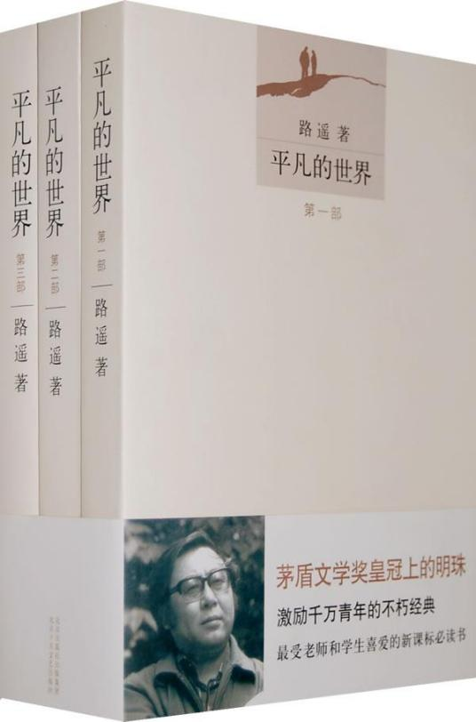

1.内容概括
1975年初农民子弟孙少平到原西县高中读书，他贫困，自卑；后对处境相同的地主家庭出身的郝红梅产生情愫，在被同班同学侯玉英发现并当众说破后，与郝红梅关系渐变恶劣，后来郝红梅却与家境优越的顾养民恋爱。少平高中毕业，回到家乡做了一名教师。但他并没有消沉，他与县革委副主任田福军女儿田晓霞建立了友情，在晓霞帮助下关注着外面的世界。少平的哥哥少安一直在家劳动，与村支书田福堂的女儿——县城教师田润叶青梅竹马。少安和润叶互有爱慕之心，却遭到田福堂反对。经过痛苦的煎熬，少安到山西与勤劳善良的秀莲相亲并结了婚，润叶也只得含泪与父亲介绍的一直对她有爱慕之情的李向前结婚。这时农村生活混乱，又遇上了旱灾，田福堂为了加强自己的威信，组织偷挖河坝与上游抢水，不料竟出了人命。为了“农业学大寨”，他好大喜功炸山修田叫人搬家又弄得天怒人怨。生活的航道已到了非改变不可的地步。
1979年春，十一届三中全会后百废待兴又矛盾重重，田福堂连夜召开支部会抵制责任制，孙少安却领导生产队率先实行，接着也就在全村推广了责任制。头脑灵活的少安又进城拉砖，用赚的钱建窑烧砖（大部分为贷款），成了公社的“冒尖户”。少平青春的梦想和追求也激励着他到外面去“闯荡世界”，他从漂泊的揽工汉成为正式的建筑工人，最后又获得了当煤矿工人的好机遇，他的女友晓霞从师专毕业后到省报当了记者，他们相约两年后再相会。润叶远离她不爱的丈夫到团地委工作，引起钟情痴心的丈夫酒后开车致残，润叶感到内疚回到丈夫身边，开始幸福生活。她的弟弟润生也已长大成人，他在异乡与命运坎坷的郝红梅邂逅，终于两人结为夫妻。往昔主宰全村命运的强人田福堂，不仅对新时期的变革抵触，同时也为女儿、儿子的婚事窝火，加上病魔缠身，焦头烂额。
2.作品中性别意识的局限性
（1）特定女性人群描写
回顾作者以往的乡土文学作品，并结合乡土文学类别下的其他作者作品，我们很容易发现女性角色的共性。首先，此类作品中一般都会出现一位知性、大方的女性，这位女性饱读诗书，贤惠文静，浑身充溢着知青的文者气质。然而，她的结局往往都是悲惨的—她会被现实和出身所打败，最终无奈只能选择回归农村，或是平平淡淡成为一名主妇—而在本系列作品中田晓霞和田润叶便是这样的形象。除此之外，乡土文学大部分作品中还会有一类默默奉献的女性形象。这类女性自身并没有多少文化知识储量，她们固守着传统三从四德的道德观念，甚至对于爱情也是懵懵懂懂没有感觉。她们以丈夫为自己生活的中心，为了丈夫和家庭心甘情愿奉献自己的一切。一般来说，她们的结局都是悲惨的，就像是孙兰花和贺秀莲在这部作品中的存在。
（2）两性形象侧重不平等
不难看出，《平凡的世界》 中的女性，大多处于男性世界中的从属和边缘位置，尽管她可能美丽、聪明、贤惠、大方，却不过是男人追逐的对象和丰富故事的花瓶。
贺秀莲自然不必说，作为一个中国的传统女性，她没有前卫的观念和丰富的知识储备，她生活的全部意义就在于其丈夫和家庭。她在农村所受到的教育让她把自己排在丈夫与家庭的后面，全身心的为孙少平默默地付出。哪怕她的丈夫并不像她爱他那样爱她。再者说田晓霞，她几乎是完美的，但她存在的全部意义也只是启发引导孙少平。除此之外她几乎没有自我价值，没有个人世界。她有说过“真正的爱情不应该是利己的，而应该是利他的”。这个他自然是孙少平。作为一名省报记者，她完全能在 80 年代初城乡巨变的环境下探索社会的变化，在新媒体面市时一展自己超越时代的思想，从而实现自身的人生价值。但本书对她工作仅有的描写是她趁工作之便到煤矿去看望孙少平和她为了救人而牺牲。她自己的生活与工作着墨甚少，就连对田晓霞仅有的内心世界的描写也是建立在跟孙少平的情感沟通上。因此，从以上方面可以看出路遥本人并不平等的性别观念以及他对于女性“奉献”精神的偏见式误解。
（3）女性力量缺失
正如上一点所提到的，在本系列作品中，所有女性形象存在的意义便是衬托男性的品质。值得注意的是，尽管有部分女性角色拥有觉醒的思想，但她们最终得到的都是极其悲惨的结局。在作者的笔下，所有的女性角色几乎都没有与社会抗争的勇气，她们屈服于现实，最终还是沦为男性的附属品及社会的受害者。因此可以很容易地看出作者在作品写作过程中对女性力量的缺失。
（4）以典型男性视角构建女性角色
文中的女性形象是路遥站在男性的角度上创造的，他并没有实实在在的站在女性的角度去刻画女性形象，而是给文中的女性人为的赋予他作为一个男性所渴望的品质和他所要表达的时代特征。尽管作者有提到女性的一些美好品质，但这些品质都是基于“贤良淑德”方面上的，也就是说，作者都是站在一位审视妻子合格品质的角度上去评判作品的女性形象的。
4.总结
总结来讲，如果单纯从乡土文学及社会现实意义的角度来讲，《平凡的世界》无疑是人类文学的瑰宝。然而，仅仅从性别角度的方向来分析，本系列作品还是有一定局限性的。
1.Content Overview
In early 1975, Sun Shaoping, a peasant's son, went to Yuanxi County High School. He was poor and had low self-esteem; later, he had feelings for Hao Hongmei, who came from a landlord family in the same situation. Shao Ping graduated from high school and returned to his hometown to become a teacher. But he did not sulk; he and the county revolutionary committee deputy director Tian Fujun's daughter Tian Xiaoxia established a friendship, with the help of Xiaoxia, concerned about the outside world. Shao An, Shao Ping's brother, who has been working at home, is a childhood friend of Tian Run Ye, the daughter of Tian Futang, the village clerk, and a teacher in the county. Shao An and Run Ye mutually love each other, but Tian Futang opposes it. After a painful ordeal, Shaoan went to Shanxi and the hard-working and kind-hearted Xiulian match and got married. Run Ye also had to tearfully marry Li Qianqian, who had been introduced to her by her father. At this time, rural life was chaotic, and they encountered a drought, Tian Futang, to strengthen their prestige, organized to steal the river dam and the upstream to grab water, but was unexpectedly killed. To "learn from Dazhai in agriculture," he was so happy to blow up the mountain to build a field and ask people to move. The course of life has come to the point where it must be changed.
In the spring of 1979 Eleventh Plenary Session of the Third Central Committee, after a hundred contradictions, Tian Futang held a branch meeting overnight to resist the responsibility system, Sun Shaoan, but the leadership of the production team took the lead in the implementation, then also in the village to promote the responsibility system. Nimble-minded Shaoan chose to go to the city to pull bricks, with the money earned to build a kiln to burn bricks (most of the loan), became the commune's "pioneering household." Shao Ping's youthful dreams and pursuits also inspired him to go outside the "world" he became a formal construction worker from the wandering solicitor Han and finally got an excellent opportunity as a coal miner. His girlfriend Xiaoxia graduated from the teacher's college to become a reporter for the provincial newspaper, and they met again in two years. Runye went away from her unloved husband to work for the local committee, causing her beloved husband to drink and drive and become disabled; Runye felt guilty and returned to her husband and started to live happily. Her younger brother, Runsheng, has also grown up, and he meets the ill-fated Hao Hongmei in a foreign country; finally, they are married. Tian Futang, a strong man who used to dominate the village's destiny, is not only resistant to the changes of the new era but is also worried about his daughter's and son's marriage, as well as his illness, which makes him anxious.
2.Limitations of gender consciousness in the work
(1) Depiction of specific female population
Looking back at the author's previous works of vernacular literature and combining them with the results of other authors under the category of vernacular literature, we can easily find the commonality of female characters. First of all, in such works, there is usually an intellectual and generous woman who is well-read, virtuous and quiet, and full of the literary temperament of youth. However, she often ends up in a tragic situation - she is defeated by reality and her origins and eventually has no choice but to return to the countryside or become a housewife - and in this series, Tian Xiaoxia and Tian Runye are such images. In addition, there is a category of women who are silent and devoted in most local literature works. These women do not have much cultural knowledge, cling to the traditional moral concepts of the three virtues, and are even ignorant of love. They take their husbands as the center of their lives and willingly give everything they have to their husbands and families. Generally, their end is tragic, just like the presence of Sun Lanhua and He Xiulian in this work.
(2) Gender image focuses on inequality
It is easy to see that the women in "The Ordinary World" are mostly subordinate and marginal in the men's world. Although she may be beautiful, intelligent, virtuous, and generous, she is just an object for men to chase and a vase for rich stories.
Naturally, He Xiulian needs no introduction. As a traditional Chinese woman, she has no avant-garde ideas or rich knowledge base, and the whole meaning of her life lies in her husband and family. Her education in the countryside puts her behind her husband and family, giving herself to Sun Shaoping wholeheartedly and silently. Even if her husband doesn't love her as much as she loves him. Furthermore, Tian Xiaoxia is almost perfect, but the whole point of her existence is just to inspire and guide Sun Shaoping. Other than that, she has virtually no self-worth and no personal world. She has said, "true love should not be self-interest, but should be altruistic." The object of her love is naturally Sun Shaoping. As a journalist for a provincial newspaper, she was able to explore the changes in society in the early 80's when the city and countryside were changing dramatically and to realize her value in life by showing her ideas beyond the times when the new media came to market. But the only descriptions of her work in this book are her visits to Sun Shaoping in a coal mine and her sacrifice to save lives. Her life and work are rarely described, and even the only description of Tian Xiaoxia's inner world is based on the emotional communication with Sun Shaoping. Therefore, from the above aspects, we can see Lu Yao's unequal gender concept and his prejudiced misunderstanding of women's "dedication."
(3) Lack of female power
As mentioned in the previous point, in this series, all female characters exist to complement the quality of men. However, it is worth noting that although some female characters have awakened minds, they all end up with highly tragic ends. In the author's writing, almost all the female characters do not dare to fight against society; they succumb to reality and eventually become the subordinates of men and the victims of society. Therefore, it is easy to see the author's lack of female power in the writing process.
(4) Construction of female roles from a typical male perspective
Lu Yao creates the female characters in the text from a male perspective. He does not portray women from a female perspective but gives them artificial qualities that he aspires to as a male and the characteristics of the times that he wants to express. Although the author mentions some good qualities of women, these qualities are based on the aspect of "virtue and virtue," that is to say, the author judges the women in his work from the point of view of a man who examines the qualified qualities of his wife.
3.Summary
To sum up, if we look at it from the perspective of vernacular literature and social relevance, "The Ordinary World" is undoubtedly a treasure of human literature. However, if we analyze the series only from the direction of gender, there are still some limitations.